项目 01 · 手势分类实验室
一个面向教学的轻量级手势识别实验系统，基于浏览器端 MediaPipe Hands 提取 21 点手部关键点后进行特征归一化，并通过可交互 KNN 完成“石头/剪刀/布”实时分类与决策边界可视化，强调从感知、特征工程到分类推断的完整链路。
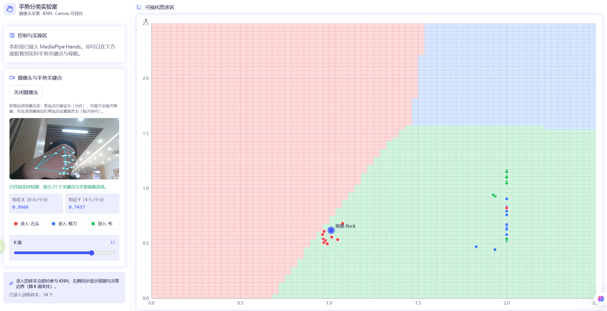
一个面向教学的轻量级手势识别实验系统，基于浏览器端 MediaPipe Hands 提取 21 点手部关键点后进行特征归一化，并通过可交互 KNN 完成“石头/剪刀/布”实时分类与决策边界可视化，强调从感知、特征工程到分类推断的完整链路。

一个在浏览器内完成机器学习流程编排与执行的可视化实验平台：前端基于 React + TypeScript + React Flow 提供拖拽式节点画布，将 DAG 自动编译为 Python 代码后交给 Web Worker 中的 Pyodide 运行时执行，并在右侧输出训练结果及可视化。
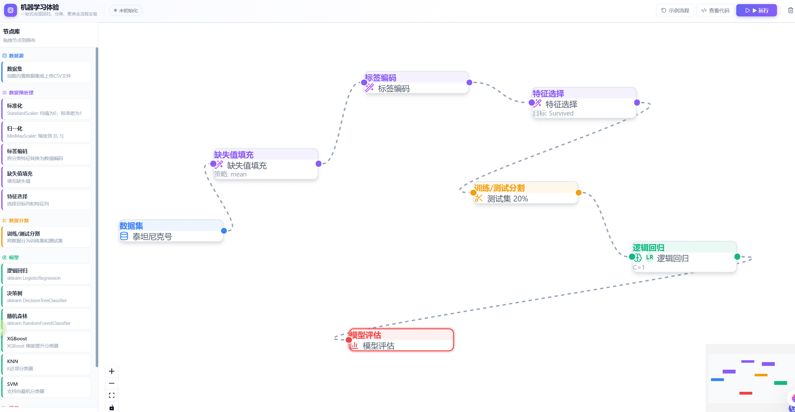
基于 MediaPipe Holistic 的多模态体征提取演示页面，聚焦手部、面部网格与全身姿态关键点的实时检测与渲染展示，主要用于验证前端视觉感知能力与交互可视化效果，而非训练型任务。
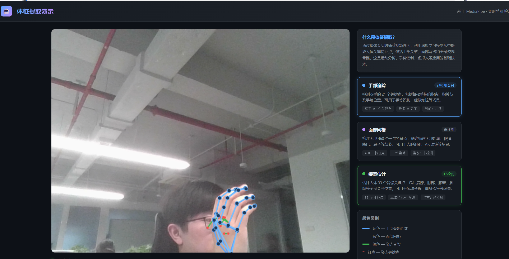
一个面向教学与竞赛场景的计算机视觉实训平台，核心能力覆盖数据与权重管理、图像预处理、模型训练、推理和评估对比等完整实验流程。
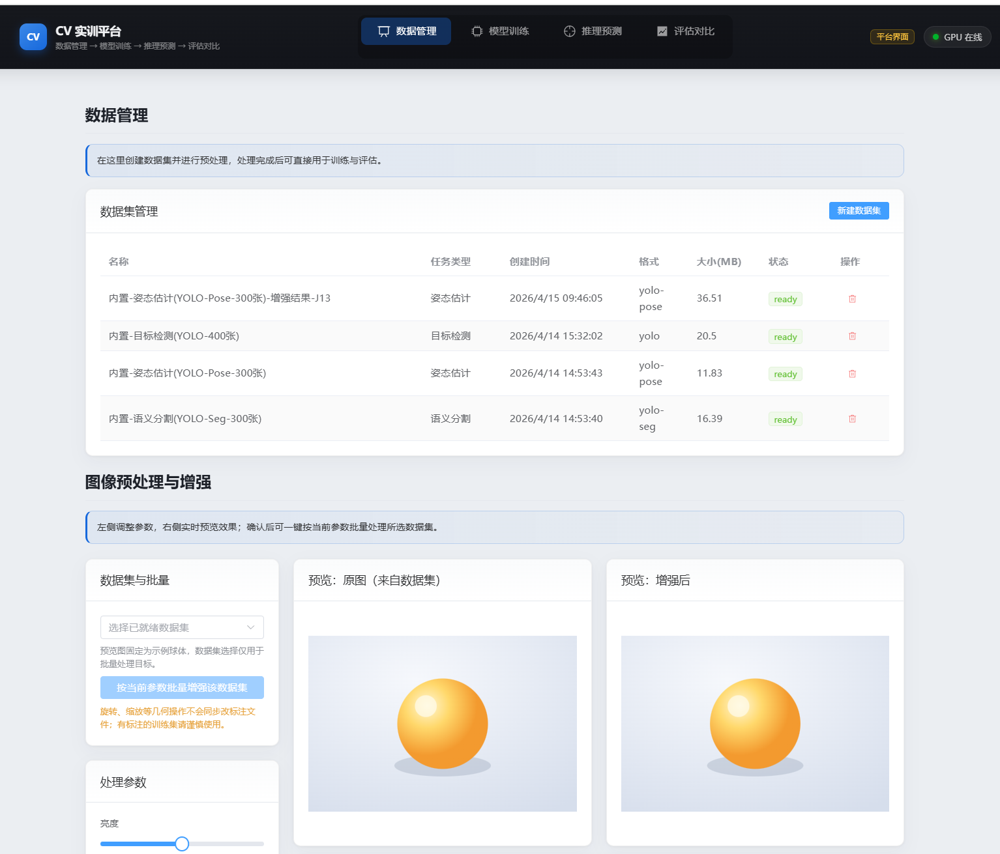
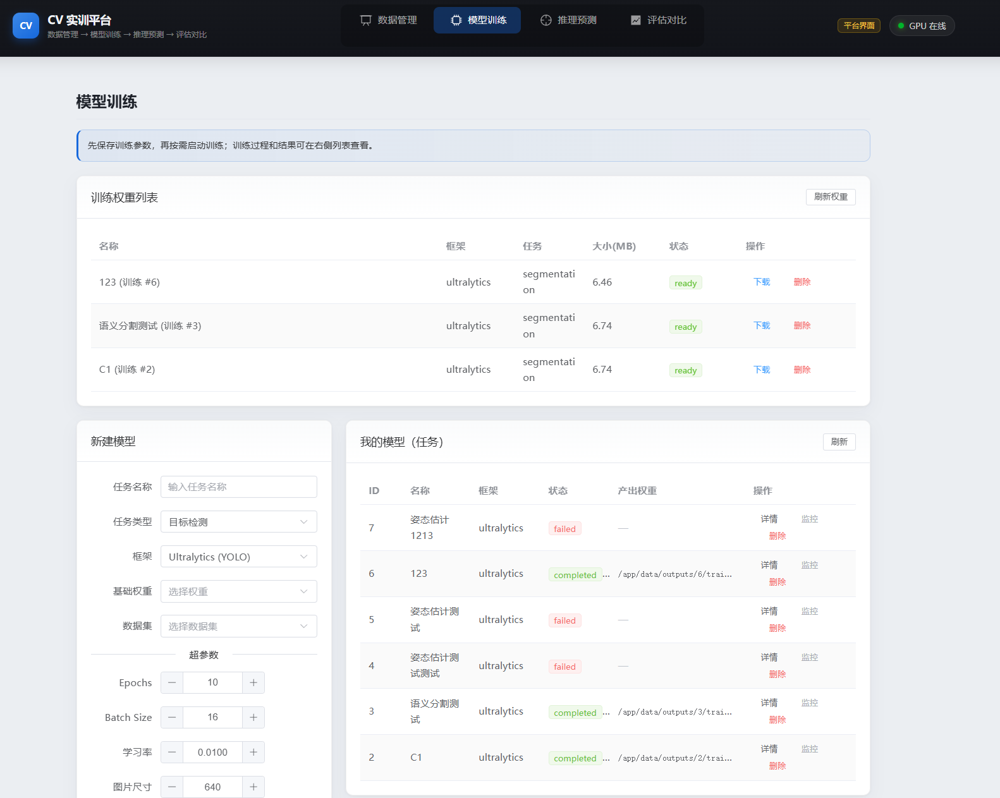
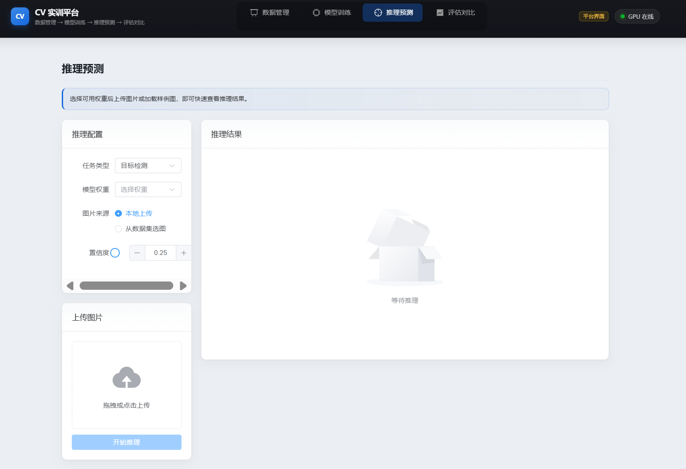
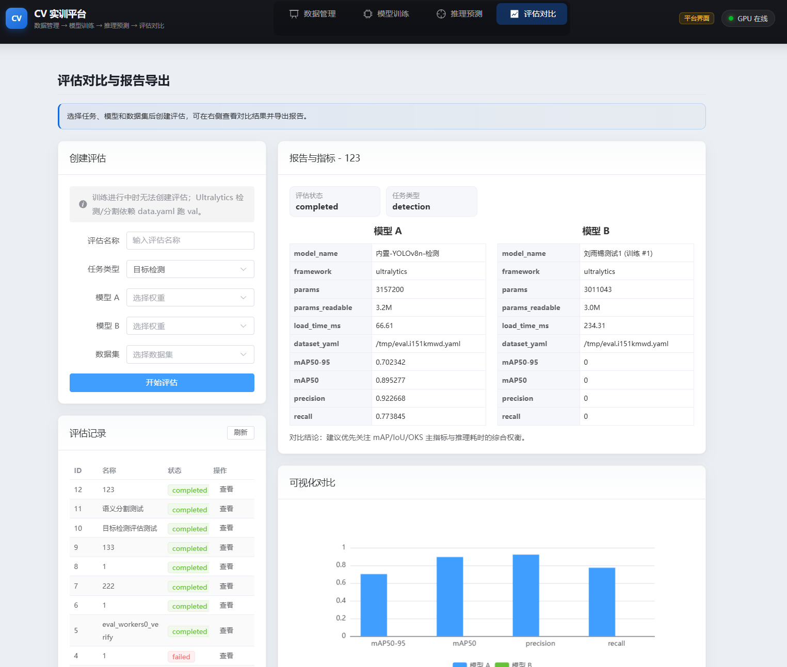
NLP 实训平台面向教学与竞赛场景，提供从数据准备、模型微调到评估导出的全流程实践环境，以统一、清晰、可复现的实验链路降低大模型应用门槛，帮助学习者系统掌握自然语言处理任务构建方法，帮助团队高效沉淀训练经验与模型成果。
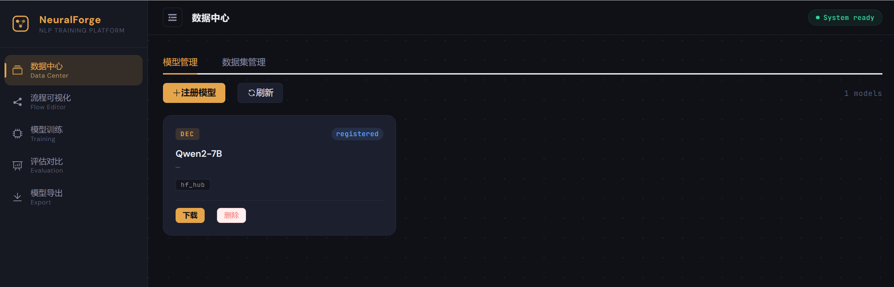
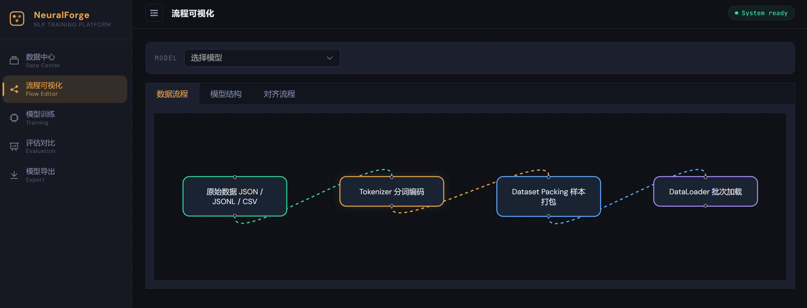
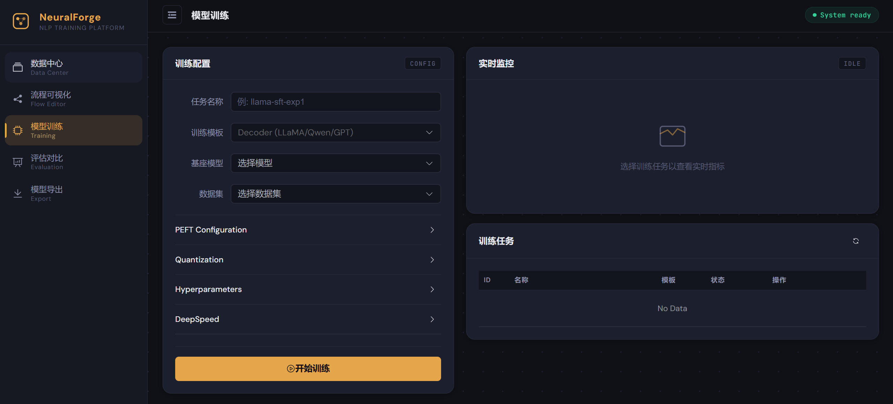
一个面向教学的 Transformer 机制可视化讲解页面，聚焦输入嵌入、位置编码、自注意力、前馈网络与输出预测的逐步演示。通过流程拆解与动态图示帮助学习者直观理解注意力权重如何影响信息聚合，以及多层结构如何完成上下文建模。
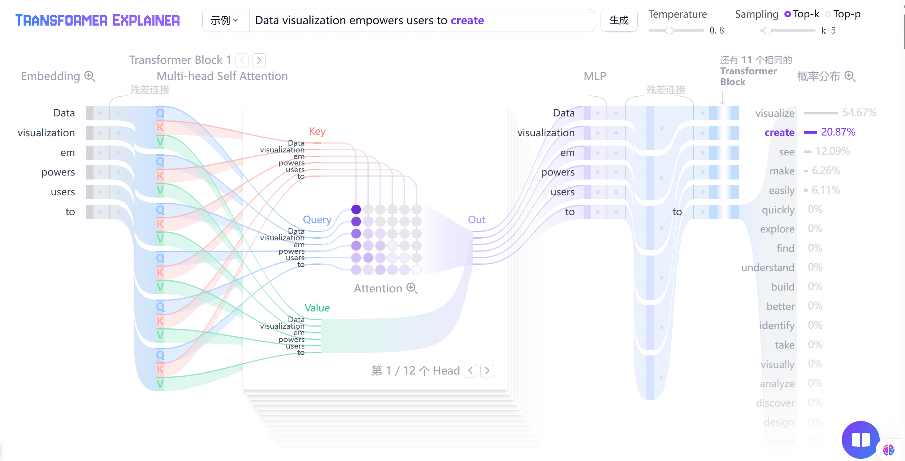